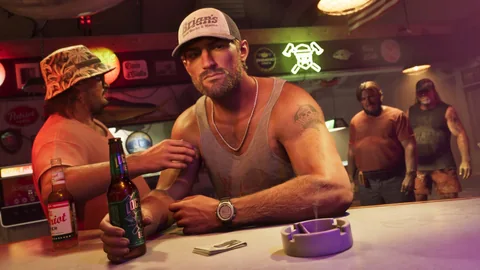

Manger, boire, se soigner : les consommables servent à récupérer de la vie et à tenir pendant une mission. Voici ce que l’on sait pour GTA VI, sans inventer de liste de produits ni de prix.
Aucun article, prix ou effet chiffré n’est publié par Rockstar pour GTA VI. Les repères ci-dessous viennent des présentations officielles et des précédents jeux de la série.
The Rusty Anchor

Un verre au barCocktail au bord de la piscine
Ce qu’il faut savoir
Repère de la série
À quoi ça sert
Dans les précédents GTA, un snack, une boisson ou un repas rend de la vie ; un gilet pare-balles ajoute une protection. On les achète dans les supérettes, les distributeurs et les fast-foods, ou on les trouve sur place. C’est la même idée que le joueur attend dans GTA VI.
Présentations officielles
Ce qui est montré pour GTA VI
L’Extended Look du 27 août 2026 montre Jason et Lucia dans des restaurants et des commerces, qu’ils peuvent aussi braquer. D’après les comptes rendus de cette présentation, le personnage peut prendre ou perdre du poids selon ce qu’il mange et son activité physique, et sa condition physique joue sur ses capacités. Rockstar n’a publié ni liste d’articles, ni prix, ni chiffres d’effet.
À confirmer
Où on s’attend à en trouver
Fast-foods, supérettes, distributeurs automatiques, bars et stands de plage apparaissent dans les médias officiels de Vice City et des Keys. Voir une enseigne ne prouve pas qu’on peut y acheter quelque chose : chaque adresse sera ajoutée ici quand ce sera confirmé.
Conseil
Et dans le calculateur ?
Compte les consommables comme des petites dépenses régulières : dans « Mon budget », mets-les dans le poste « Consommables » avec le montant que tu imagines dépenser par partie. Le kit de soin et le gilet sont décrits dans l’Armurerie.
Les captures réutilisées conservent leurs crédits et leur provenance dans les médias du site. Les références communautaires restent dans leur catalogue d’origine, avec leur statut.